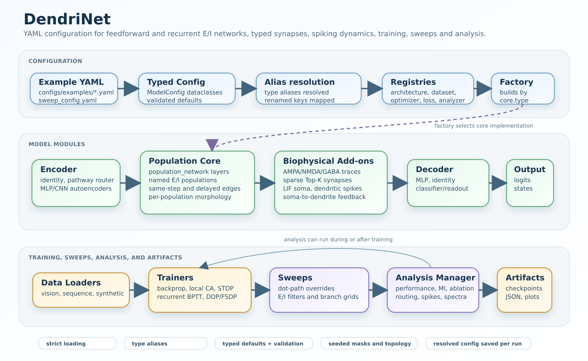

DendriNet
DendriNet is a PyTorch library for networks of dendritic neurons. Its Python
package is dendritic_modeling. A DendriNet neuron is a tree of dendritic
branches: each branch reads a sparse set of excitatory and inhibitory inputs,
integrates them by shunting (divisive) or additive inhibition, and passes its
output toward the soma. Neurons are grouped into named excitatory and
inhibitory populations that can be feedforward or recurrent, rate-based or
spiking. Experiments are described in YAML files that the library loads,
validates, trains, analyzes and sweeps.


From a YAML file to trained models and analysis results.
Install the released library and train a small population network on generated data for one CPU epoch:
python -m pip install --upgrade dendritic-modeling
dendritic-example synthetic_population --output demo.yaml
dendritic-train demo.yaml --epochs 1
For a graphical first run, install the companion package with
python -m pip install --upgrade dendrinet-studio and follow Train your first network.
Every model has three parts: an encoder that prepares the input, a core that holds the dendritic network (or a baseline), and a decoder that maps the core output to the task. Model architecture describes this structure and the families of cores.
Where to start
Goal |
Page |
|---|---|
Install DendriNet and train a first model |
|
Draw a network, trace E and I inputs and compare training runs |
|
Find a configuration to start from |
|
Build populations of dendritic neurons |
|
Choose integration rules, gates and synapse types |
Dendritic neurons, Synapses and connectivity, Temporal dynamics |
Write and validate a configuration file |
|
Choose a learning rule or train on several GPUs |
|
Find the files a run writes |
|
Analyze trained models and saved checkpoints |
|
Run parameter sweeps |
|
Pin a project’s code to an exact library commit |
|
Look up a component, an option or a command |
Component catalogue, Options reference, Command-line reference |
Add components from your own package |
Getting started
Building models
Configuration
Data and analysis
Running experiments
Development